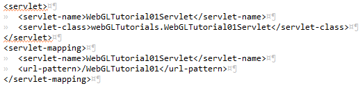
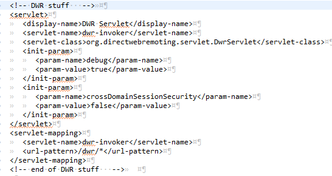
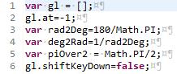
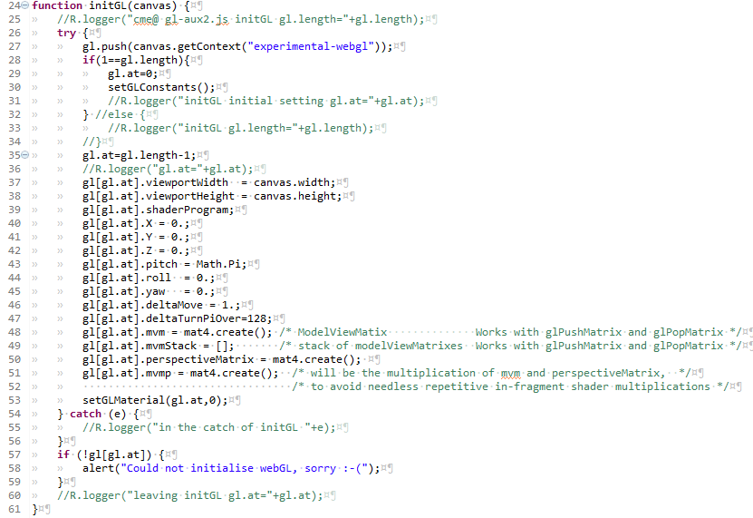
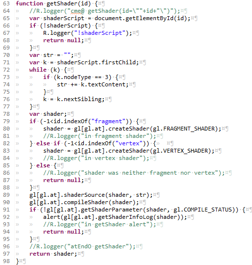
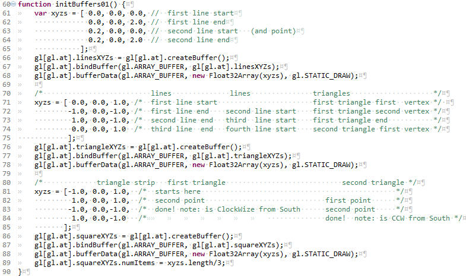
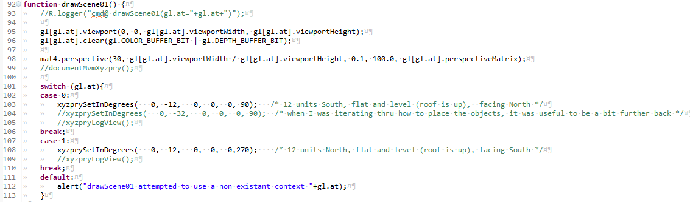

Contents |
Welcome to the first in my series of WebGL Tutorials. These tutorials are based on the well known Learning WebGL series, with this first tutorial being based on the WebGL Lesson1. It shows you how to draw shapes on a web page. The simple shapes shown are not all that impressive, but as with many a journey in life, it is taking that first step which is the hardest. In order to draw so little as a dot on a web page there is a substantial bit of bother to go thru. Providing that code, and describing how it fits togeather is the aim of this first lesson.
We stand on the shoulders of giants. In this case there is a huge debt I owe to
those who came before: those who pioneered computer graphics, embodied it in OpenGL, wrote the NeHe OpenGL tutorials, the OpenGL Red and Blue Books,
the webGL working group who morphed it into WebGL, and the base for my own first webGL efforts, the WebGL Lessons.
I have pictures
in my head but I am not particularly gifted at drawing freehand. It is only with computer graphics that I have been able to show others some of the things
I see. It is my sincere hope that, with a bit of training, you too will be able to take those things that you imagine, and are able to share them
with others.
These tutorials are a best match with people who have a reasonable amount of programming experience, but no prior exposure to computer graphics is required. The goal is to get you up and running a working 3D interactive web page as quickly as possible, with a good understanding of what is going on. Writing these tutorials is how I'm learning WebGL myself, so there may well be (and probably are) errors; use at your own risk. However, I'll be fixing bugs and correcting misconceptions when I hear about them, so if you see anything wrong, please let me know in the comments.
Because I have a couple of things I think are worth sharing, things which address a couple of the frustrations I've encountered as
I was writing 3D interactive graphics programs. These things are omissions from the previously available instruction sets.
Which way is up?
And no I don't mean figuratively, I mean literally... one really should know the orientation of one's Point Of View (POV),
One really needs to know way is up, in order to know which way is right.
Another guiding principles is that two wrongs don't make a right, but three lefts do.
I can't abide half fast code. I'm afraid that sentence only works in English. Re-read it quickly. (if you still don't get it, read it quickly out loud)). One aspect of computer graphics is that you need not draw the side of a shape which is pointing away from the viewer. It's a little tricky, but you can set things up to draw only the sides of things which face the viewer. If you don't take steps to not draw the backside, you waste execution time and/or battery. Twice as much drawing will not take quite twice the time, but close enough to prompt the half-fast comment.
WebGL is mostly javascript programming, which DID turn out to be as bad as folks said it would be. An error will cause a program to just stop. No error codes, no suggestion of which line caused the error. NOTHING. just lack of function. A friend suggested that I should do my development in mozilla firefox using bugzilla. This is of immense help... the console shows run-time process errors, including the line number of failing code. This still left no good way to pick at my logic errors, like when I'm doing string manipulation and mess up the two numeric variables. (This is not as dummkopf an error as might first appear: somewhere between java, javascript, and sql, the substring() (and/or substr()) functions are all different). Without an ability to write variable values at runtime to either a file or a console I'm sunk. Client-side (where javascript lives) file writing is an obvious security exposure, and so is not allowed. As a highly replicated cloud server system, GAE does not allow server side writing to files. Soooo... I applied a very powerful tool to what seems an a almost trivial task. I use the the jquery ajax interface to pass formatted strings back to serverside, an onto the console thru the log4j logger. Without this trick, webGL programing would be more frustrating than fun.
Multiple webGL windows (canvases) are another reason. First off, is just a simple attitude of wanting to be able to have more than one window when I want more than one window. The webGLTutorials homepage is an example. There are a couple of ascpects of 3D graphics which really would be able to be shown more clearly if one has two canvases. When we get to exploring the frustum two windows will all allow showing how it interacts with the depth calculations. Understanding this interaction allows for a strategy which can mimimize problems of surfaces which should be hidden, poking thru. Multiple windows also allow a technique of shifting the calculation load onto the graphics processor to speed a nifty interface in which objects in the scene are selected by the mouse, using the objects 3D positions.
The title of this tutorial reflects this reality. The point and the two lines are not different from what anyone would think. The third thing, three lines, looks to me like a triangle. It is not. It is 3 line segments drawn end to end. The lower left IS a triangle. It has no special features, no lines, at the edges. There are no features AT the boundary, just a separation between what is within the triangle, and what is not. The lower right is two triangles, not a square. You can not see where the triangles join, but it is along the one of the diagonals of what I agree, does look like a square.
When you want to draw a seemingly 3D shape you just keep putting triangles together and paste them over the full surface. If you want to make a hexagon, one way to do it is to make six equilateral triangles with a common vertex. To make a cube, put two triangles together to make a square then two more to make a second square, put the second square at a right angle to the first square, and continue till you have 6 pairs of triangles which mimic the surface of a cube. Notice I did not say mimic a cube, but rather, mimic the surface. There is no way to make any solids of any shape in webGL, only surfaces.
The following image shows the expanded view of the eclipse Project Explorer. I've put checkmarks next ot the files which did not come from the GAE creation of a "New Web Application Project". A short description of the file contents has also been added. Black chackmarks are for files pulled from other sources. Blue checkmarks are for overhead files, those which need to have content modifed as part of the archetecture of a web project, but whose content is not particular to the webGLTutorial01. The green checkmarks are for files which are specific to webGLTutorial01.
We'll go thru the blue checkmarked files describing the parts which needed updating, with one exception. We'll go thru only the
subset of gl-aux2.js which is used in the webGLTutorial01. This file has lots of stuff which comes into play in the later tutorials.
Those sections will be explained when we get to those later tutorials.
In the next section, we follow the flow thru the webGLTutorial01.
This is the server side catcher for logging within javascript. The imports were copied from older code, or maybe from the DWR documentation. There is one and only one function: which accepts a string and passes it on to the logger. I used R as the class name to be as short as possible, as I do most of my debugging by writing a lot of diagnostic "I am here and a variable has value..." statements. For the GAE debug server, the logger must ouput to the console.
An aspect of my programming shoudl be explaned: Those double slashes in commented-out inline code..
like on the line 16 //logger.setLevel(Level.DEBUG);
I almost always
leave my diagnostic logging statements in the code, after having made two observations...
1) I'm not very good at commenting my code (well who is, really), and I've come back to code written years ago
and
2) if I change the // to /**/ it reactivates the diagnostics, and leaves a marker lets me go back an toggle the code
to be quiet again.
The diagnostics which were
invasive enough to check the initial coding, have been clear enough to allow me to figure out what I was trying to do the first time around.
Another aspect of my programming is how that I have toggled the whitespace characters to be visible, and the images in these
tutorials show this. For your own code you may wish to reverse this choice. You can get there by clicking on
Window > Preferences > General > Editors > Text Editors > Show Whitespace Characters
I found that my timing was off when I was deleting things by holding down the delete key, and the invisible tab or space keys got
deleted at the same rate, but with different effects on the text. Again, it is a matter of taste but I find the visible tabs make it easier to
keep track of how many indents I have on complicated if, for, while, and switch statement sets.
This sets the location (console, file, or new file every run) and format of the logging. For the webGL javascript coding, I chose a mimimalist footprint, just a # character to highlight a new line. I've left the alternative formatting and location sectons in the file. Am not sure why # is the way to make a line into acomment in this file, but sometimes you just gotta go with the flow.
jquery-ui-1.10.0.custom.cssis the style portion of the jquery UI "Start" theme. You can access a gallery of jquery UI themes at jquery ThemeRoller I did modify the font size, changing it from 1.1em to .8333 em before downloading.
gl-aux2.js is the Grphics Library Auxiliary functions. In openGL there was a glaux, so I tacked the 2 on the end.
This is where I stuck the infrastructure of the new webGL aspects provided with these tutorials. Bunches of the functions
are not used until later tutorials, and well introduce only the ones which are in the programming flow section of this tutorial.
As you mutate the code in these tutorials into your own prjects, it is expected that that you will eventually work up to:
.jsp header: project name matching and adds for goodies you've found
.jsp shader: inclusion "as is" from one of the later tutorials
.jsp GUI: full overwrite with selective retention of bits and bobs which match your needs.
webLGTutorialXX.js: general flow will be unchanged, details of which variables do what probably
macthing the format of one of the later tutorials.
gl-aux2.js: probably no changes, unless you are making extentions to fundamental capability. If you can, please share.
This is where the ajax regestration occurs. If it's not in this file, it will not be allowed to recieve messages from
the client side. The webGLTutorials uses only one, almost trivial class... R which
is a reciever of strings, which are then shuffled off to a logger.
web.xml

web.xml has two user modified sections. the one imaged above is where linkage from the URL to the servelet is made.
project has only one web.xml, with as many of the servelet sections as there are URL's to be served. When editing these
snippets to add new connections to other servlets, pay attention to the capital/lower cases.
Failure to match exactly, results in a frustrating lack of function when you enter your brand new URL. The worst part is that
there is little available in the way of diagnostics. For-warned is for-armed.

The second web.xml section is one of the portions of the DWR setup.
The overhead has the connections to the .css and the .js files.
The .css is the Cascading Style Sheet. The fullest expression of what an be done with .css
that I have encountered is Zen Garden This is a substantioal number of pages which look
amazingly different, but are actually all the same content, only the .css's are different. The webGLTutorials.css is lame and tame...
a couple of fonts and the first lines of paragraphs get indented.
The .js are the javascript libraries. The biggest of these is the jquery which is used extensively
in later tutorials to manipulate the GUI elements. The sprintf is like the c++ sprintf function for javascript... it allows formatting
of strings. The two lines with DWR are interesting. They refer to .js files which seem not to exist, but without these lines, things
don't work.
Shaders is a subject that could fill a book, In fact it does. The OpenGL Shading Language is the newest volume (~740 pages) from the OpenGL series. It is referred to as "the Orange Book" because of the orange cover. Shaders are the programs which get loaded into (onto?) the GPU of your device and are programmed in their own language (the GL Shadeing language). WebGL sends data into these shader programs and they perform calculations and set the contents of the graphics memory locations which map to the display. Shaders do encompas a full language, but the tutorials will show enough to allow you to manipulate images.
Well take these shaders in two passes. For this first pass thru shaders, I'll describe the types of variable declarations, and later,
after the code has gone in and loaded values into the varialbes, I'll describe how the shaders manipulate them.
Shaders come in two flavors, Vertex and Fragement. The Vertex Shaders acts on
individual vertices before they flow in groups (like triangles) to the fragment shader.
line 21 declares a variable named aXYZ which has type vec3 and is of class attribute. A vector is defined in gl-matrix.js as a "three
dimentional Vector" I think of them as an array of 3 floats, but thats just my c++ and java leaking thru, javascript has no specified types.
The leftmost part of the declaration is the most removed from my previous language experience. Shader Language has 3 catagories of variables:
Attributes, Uniforms and Varying. When you declare any variable, it must have one or the other of these specified. Sharp eyed observeres will
have noticed the presence of two variables which seem to violate this rule (gl_Position and gl_FragColor). They belong to the of the
small number of pre-defined variables within the GL-Shader language.
Line 42 kicks off all the action. The onload= causes the javascript function webGLStart01 to execute after the page has loaded into the browser. The "overflow-x: hidden;"" sets the page so that it would not wrap in X. I this to fix the two canvas's side by side. This means that anyone who opens this page on a device which is less wide than 1000 (plus a couple) will get a scroll bar on the bottom.
lines 44 thru 48 are the links at the top of the page
Line 51 is the declaration of the left canvas. It gets set up with an id, which has encoded in it, which tutorial it belongs to, and the final 0 is which canvas is it (0 for the left, 1 for the right). I chose 500 pixels because i figured anone who has a display with less than 1050 pixels wide is not going to make it as a programmer anyway. The id's are important because we'll be manipulating various elements of our pages with after accessing them with calls to javascript document.getElementById(yourIDhere);
line52 sets up the xyzpry string as a a paragraph with an id. These are blank in this initial instantiation, but after we draw the scene, well also set the contents of the ID to be numbers which represent our location, and which way we are pointing. The name of the variable, xyzpry is short for X, Y, Z, pitch, roll, yaw. The first 3 are likely familiar to anyone approaching 3D graphics programming. They are the cartesian co-ordinates representing locations on 3 orthogonal axies. These tutorials use the orientation of axies, one to another, taught in the united states, and I take the viewpoint of someone facing north. This would have the positive X axis be east, while the positive Y axis is north, and the Z axis is the local up. The second triplet might be a little less familiar to those of us who do not fly airplanes (or their gaming simulators). As explained in the wikipedia article on Flight Dynamics pitch is when the nose of the airplane goes up or down. My co-ordinates use flat and level as 0 degrees, with up being positive 90 degrees. Roll is theairplane continuing to point in the same direction, but the wings tilting up or down. My co-ordinates use 0 Degrees as the direction of the right wing as the airplane flies north ie east. Positive 90 degrees roll would put the right wing straight up. Yaw is the third direction about which the airplane can turn. When an airplane is flying flat and level, the yaw is the direction in which it is flying. My co-ordinates use east as 0 degrees yaw with north being positive 90 degrees yaw.
After you have digested the paragraph above, the two examples at the top of the page might be good to go thru. The scene is that the features you are looking at are like shapes painted on a glass wall which runs east and west. Both canvases in each of these tutorials show the same scene, but are drawn from two different viewpoints. The left canvas is being viewed from south of the glass wall, looking north. 0 X means our viewpoint is neither east nor west. -12Y means we are 12 units south. 0 Z means we are neither up nor down. The PRY of 0,0,90 means we are looking with our head neither tilted up nor down (0 picth), Not tilted to the left, nor the right (0 Roll) and north (90 Pitch). The right canvas is 12 units to the north of the glass wall with the white shapes painted on it, head neither tipped nor tilted, looking south.
One of the things you'll need to get used to with webGL is that there are no units. By this I mean when we are some number of units along X or Y or Z, it is not meters, nor feet, nor centimeters, nor miles. It's just units of distance. The only problems come when shapes have been designed in two different systems, like one designer making his robot arm life size and having a 0.3 unit length (because he works in meters) and another designer making the robot body life size with a size of 100 units (because he works in centimeters). If either designer had done the whole robot body and arm, no problems. Mix and match the pieces from the two designers will not work out very well. If you are drawing anything to match the real world, or the work of another designer, agree on what unit of measure will equal 1 unit of distance in webGL. So the lesson is: pick a rut, pick a good one.
Line 53 declairs a button, gives it that all important ID, positions it relative to where it would go without the positioning, and sets the initial text to be cullFace Enabled (meaning that the initial state is cullface is off). If you go up to the top and click on the cullface buttons you'll observe the triangle and the pair of triangles, ok I'll call it a square from now on. First I'd like you to observe that the point and the lines do not toggle between visible and non-visible. That is because points do not have sides: they are equally visible from all directions.
The other shape which can be drawn, a triangle, does have two sides. The webGL nomenclature which is applied is the CW and CCW sides (ClockWize and CounterClockWize). To understand how this nomenclature is applied draw a triangle, remembering the order of which vertex you drew first, second and third. Take your right hand and put the little pinky on the flat plane of the triangle. Curl your fingers from the first vertex drawn, to the second , to the third vertex. Your right hand thumb points out of the plane of the triangle in the CCW direction. The other nomenclature which is applied is front and back. WebGL allows the programmer to define either CW or CCW as as front. Again pick a rut, and pick a good one.
When you draw a triangle in webGL you have the option of drawing both sides, or to draw only the front. When both sides are drawn it is called cullface disabled, when only the front side is drawn is called cullface enabled. These tutorials make the choice having the face which gets to be the "front" as CCW.
Why enable cullface? Your app will be faster and will use less power. The biggest boost you can give to your app is to not draw what can not be seen anyway. Tutorial01 was set up especially so that you were looking at the scene from two oppisite directions, exactly waht does not happen very often.
Line 51 starts a <div> used to shift both the second canvas and its associated xyzpry and cullface button. Default would have put it directly below the first canvas. The shift needed is to the right by the width of the first canvas plus a small border. The shift upward needed is 500 pixels for the height of the first canvas, plus, it turns out, 61 pixels, for the height of the text and the button. The div contains the second canvas, another xyz
webGLTutorial01.jsp the last part of the GUIThe last portion of the .jsp pulls in pieces of html which have been constructed in other places.
Lines 60 and 61 use JSTL to pull in the html associated with the attributes "Form"(which is empty because We did not create it) and
the "result_html" which has a few words appended at the bottom of the active gui portion of the page.
Line 63 pulls in the bulk of the text and the images on this page as a separate file... webGLTutorial01_body.html
the webGLTutorial01.js has been left in the order in which the functions are called. My normal habit is to put the caller function as the bottom and the function which is getting worked on at the top. That way I can fiddle with the caller and the active parts with ctrl-home or ctrl-end.
The webGLStart01 function calls all the functions twice, once for the left canvas (canvas0) and once fo the right canvas (canvas1).
Lines 2 thru 16 call the full set of functions, for the canvas0, with logger calls in between the first several.
Line 2 has my usual first line as a logger call with the name of the function "here I am".
line 3 declares a variable with name canvas (not type, javascript has no type declarations). This new canvas variable gets assigned
the Document.element which is identified by its id. I follow the habits of c++ and java and start my enumerations with 0.
line 4 calls initGL with the argument canvas. initGL is one of the functions which gets reused in each of these tutorials.
The gl-aux2.js was created to be a repository for webGL functions whcih were slated for multiple uses.
gl-aux2.js... globals

Line 1 declares an array of the variable which is at the core of these tutorials. The html5 canvas can invoke a webGL context, which is pushed onto the growing array of gl's. Strictly speaking each of the gl[] is a webGL context. The name gl is part legacy, partly short version of webGL, not really usefully short for graphics library, it's just the thing that recieves all the graphics load, it's just so familiar I dont even see it any more, it's just gee el.
Line 2 declares the variable at and attaches it to the gl array. Just using the dot operator in the declaration attaches the declared variable to the thing to the left of the dot. Seems kind of wierd at first, but you'll get used to it. We'll be doing it a lot. The at will be used to dpecify which of the gl's in the gl array we are at. The tutorials contain a large number of instances of gl[gl.at]. I read this as "the gee el we're at" or "the current gl".
Lines 3 and 4 define the globals used to convert between radians and degrees. Javascript geometry functions work in radians but I stil find degrees more friendly. This conversion can be done with a small function or with variables. To convert from degrees to radians you set rad = deg * deg2rad;
line 5 sets in place a boolean for when we use keyboard input... tutorial05 and beyond. It records if the shift key is presently depressed.
This longish and I fear cryptic comment describes the modelViewMatrix. So what you might ask is a modelViewMatrix? It's tied in with
how webGL (and openGL) handles the math of translations and rotations. In order to be able to know which way is up, much less to
be able to cause movement and rotations I felt a need to know what each of the individual components of the 4 x 4 modelViewMatrix do.
There is a litle additional complication with the webGL version of the mvm (as the modelViewMatrix will hereafter be abreviated). In
webGL, instead of a real 4x4 matrix it is an linear array of 16 variables. I still show it as a 4x4 because of the way it is structured
when you put it into a 4x4. The top three values in the left column are the direction which is left wing points(again we are an airplane).
The top row is the X values, the 2'nd row is the Y values, the third row is the Z values. The second column is the direction for up thru
the roof. The third column is the direction which is forward.
The bottom value on each of those columns is the multiplyer value for the vector above it. When you multiply the bottom value by the
X Y Z vector you get to the current location of the viewer along that vector. The rightmost column is still a mystery to me. It
seems to have something to do with scale of magnification. Leaving the top three as 0.0 and the bottom one as 1.0 are the values which
the default matrix set. I've not had much use for magnification... I manipulate the underlying data structures when I want to resize
the things being viewed. We set the mvm as part of our standard initialization, and do not move around until tutorial05.
gl-aux2.js... initGL

This initializes the next gl to be attached to the growing array of gl [].
Line 25, the first line, is the here-I-am which outputs the starting size of array of gl.
Line 27 pushes a new instance of a gl onto the gl array. The canvas.getContext("experimental-webgl") is required
legacy code. It is foretold that one day the experemental will be removed, but not yet.
Lines 28 thru 34 set up the initial gl.at, and then call a function which attaches a copy of the gl constants to the gl array.
When line 27 instantiated a gl, that gl[gl.at] got a copy of all the constants, but I wanted to access tehm as gl.CULL_FACE
instead of gl[gl.at].CULL_FACE. Not sure why it bothered me so munch, but it did, so I did the work, and now it's done.
lines 37 & 38 attach the size of the canvas (defined in the .jsp GUI section) under the name viewport. A viewport is the
rectangular area onto which the drawings are projected.
Line 39 is a placeholder for the shaderProgram which wil be loaded from the script in the .jsp
Lines 40 thru 45 set in place an initial set of x,y,z,pitch, roll, and yaw.
Lines 46 and 47 set in place two variables which will be used in tutorial05 and after to step or turn an amount. These amounts.
Line 48 The newly instantiated gl gets it's own modelViewMatrix, instantiated by the mat4 function in gl-matrix.js
Line 49 Preps up for a stack of mvm's. I does not create any of them, just puts in place the framework.
Line 50 Sets in place the perspective matrix. This is another 4x4 matrix which defines the bredth and width of the
volume which is viewed. wegbGL provides a function to set the values needed to match how we will want to define this viewing
volume, but we'll get to that just before we start to draw.
Line 51 sets another 4x4 matrix which can make some portins of our code more efficient.
line 53 sets in place an initial material. This is another of those things first used in tutorial05, but this same
initialization process is used for all the tutorials.
Lines 57 thru 59 post a message to the logger in case of falure to create the gl instance. If the process flow gets
into this section it is a relatively graceful fail.
Line 6 launches us into the customizations specific to tutorial01
webGLTutorial01.js... customizeGL01()This is a bunch of boiler plate, non-controversial things which shoudl be set in order to be a good webGL citizen.
A clearColor is the background color. When you draw a scene webGL the first step is (almost always) to clear away whatever might have ben left-over from the previous scene. Normally this involves splashing a single color over the entire viewport. The clearColor used here is black. The formulation often used in the gl is RGBA referring to Red, Green, Blue, Attribute. The human eye (in non-colorblind folks) has cells which are sensitive to red, cells which are sensitive to green, and cells which are sensitive to blue. Thats why the makers of displays put phospors or LED's which emit in those three colors. Early on in the introduction of color displays for computer use, it was observed that colors started to look pretty snazzy when the displays started allowing a choice of having 256 shades of each color, from 0 = no intensity, to 255 = full brightness. This happened at the time when operating systems were going from 8 bit to 32 bits, with the legacy still hanging on in the form of 8 bit bytes making 32 bit words. BUT the mathemataly inclined among you will notice that 8 red bits + 8 green bits + 8 blue bits leaves full 8 bit bite unused in the new 32 bit archetectures. The choice was made to use this "extra" byte for something else... some attribute. What attribute.. well... different folks use it for different things at different times. Among the uses are as a depth buffer, a place to store information about what should be shown in front of what. ANoghter use is as a transparency indicator... with full on (255) usually is taken as fully opaque, with 0 as fully transparent. At this point in time, it is pretty normal for a color buffer to have 16 bits of resolution ( 0 = off and 32767 = full intensity). With 32K colors, the human eye can not see the difference from one increment to the next, so there is no need to go further except where electronic eyes will be looking at the displays. This works out well with 64 bit graphics memory, and we still have room for the attribute. In order to be able to specify a color without knowing the color resolution of the display, webGL took to using a decimal from 0.0 to 1.0 to specify the full range of intensities.
thus gl[gl.at].clearColor(0.0, 0.0, 0.0, 1.0); reads as: for the gl we are at, set the clear color to no red, no green, no blue, and full attribute. Shortform: set the background to black.
gl[gl.at].enable(gl.DEPTH_TEST); causes us to draw things in front of each other, not just draw them so that the last thing drawn covers over and hides anything in its footpring. tutorial01 does not actually use this, as all the shapes are set up to be co-planer, but having shapes hide the things behind them is just so normal that it made the standard load. If you get into a jamb, and you know your scene well, and can really not afford the calculations to allow depth_testing, you can draw your elements from back to front with no depth testing, and get the same result. This works best for scenes when no object has much depth and you don't change your perspective much.
gl[gl.at].frontFace(gl.CCW); If you are going to use cullface, its better to pick which way you want to be front, or be at the mercy of whover sets up the default for that vendors instantiation of webGL.
gl[gl.at].cullFace (gl.BACK); same thing, better to choose that the back gets culled, than to rely on every client's default.
Lines 35 thru 38 handle the two different cullFace cases. One is when the webGLTutorials include webGLTutorial01 among the several canvases to be drawn. In this case there are no buttons with id="setCullFace". The other case is when the url is called with ?CullFace=true The first case is the reason for the if. If you try to assign new words to a button (like line 37 does) and the button does not exist.. javascript just stops. I mean it just stops alltogeather. Stops drawing anything. So line 35 checks that the button really does exist before allowing the attempt at changing the button's text. Note that line 36 uses one of the constants attached to gl, instead of using the constant gl[gl.at].CULL_FACE
I should also explain the sprintf("%s%d",'cullFace',gl.at portion of line 37. This customize function will be called by tutorial01 with gl.at=0 and again when gl.at=1 The sprintf is String Print Formatted and puts the string (%s) 'cullface' right up against the decimal(%d) "0" or "1" to have the document.getElementById be looking for either id cullFace0 or cullFace1. Thus when the customize01 function is called with gl.at=0 the code can reset the text of the button under the left canvas. When the customize01 function is called with gl.at=1 the code can reset the text of the button under the right canvas.
Line 8 launches us into the initializing the shaders.
Lines 42 thru 54 are much the same tutorial to tutorial, the only difference being WHICH shaders are pulled in in.
Lines 42 and 43. The variables vertexShader and fragementShader are character strings which get the contents of the shaders defined in the <script> tags in the .jsp These have carredgeReturn/linefeeds and all.
Lines 56 thru 59 are the section of the initShaders function which sets up the linkage between the variables in the javascript and the variables on the graphics card.
With that overview, we'll go into the getShader(id) and on into the shaders where these graphics card programs get the real work done, Then we'll come back up to webGLTutorials01::initShaders and talk about the specifics of what is being laid in place in order to interact with the shaders.
gl-aux2.js... getShader(id)

gl-aux2.js functions are intended to be used as-is, on multiple projects. As such, one could skip over the explanations, and use them without any problems. If you one day trigger the error messages within gl-aux2.js, understanding the code within should make your debugging easier.
Line 65 reaches out into the html and grabs the <script> which is the shader. Lines 66 thr 69 have an uncommented "woops" which will show if you botched it and tried to load a shader with a bad id. Check the CaPiTaLiZaTiOn first, it's where I usually mess up.
Lines 71 thr 77 check if the contents of the script are text, and if so, append each character, one by one, onto the str.
Lines78 thru 88 create a shader of the correct type, keying off the id declaired in the .jsp to decide which type to create. Each of the gl[] webGL grahics contexts has a number of functions to create, load strings into, compile, and check that the compile went ok. These are each invoked in turn. If the shader contains errors, lint 92 will complain. My experience with editing shaders began with trying to add tweening in to the tutorial05 shaders, to make tutorial06. The feedback you get for shader program errors is javascript alerts, which are surprisingly useful, containing a line indicator and problem descriptions which were not opaque.
and into the vertex shaders: the programs we load into the GPU (Graphics Processer Unit)The id for this code fragment is vertex-shader0 vertex so that the initShaders() will be able to know which type of shader it is. shader just to restate the obvious, and the 0 to designate that this is my first flavor of shaders. Several of the tutorials will re-use the same shaders, after a little more functionality has been added, and they'll get a new number for each new version. Shader pair 0 does the simplest job, it creates shapes from the verticies we will input (in 3D space), and puts them onto the screen sho they look like points, lines, and triangles viewed from a specific viewpoint, again in 3D space.
Each of our X,Y,Z cartesian co-ordinates can be different, so the variable which handels them needs to be an "attribute". There are 3 co-ordinates so we use vec3 which can be thought of as a float[3]. A habbit I picked up along the way was to add a to the front of attribute variables, and so the name lease likely to get confusing seemed to be aXYZ.
next we define two variables which will not change over the whole scene, the ModelViewMatrix and the PerspectiveMatrix. As such, they get the "uniform" descriptor. Even when we get to making things seem like you are moving around (lesson05) each frame which is rendered will be from a single viewpoint (tied in with the modelViewMatrix), and with a single perspective (modeled by this matrix which describes how things look). For now think of the perspectiveMatrix as how we would tell webGL which kind of lens we have on our camera... normal, telephoto, or wide-angle. These two matrix's can be thought of as float[4][4] and have the type mat4.
Every shader must have a main function, as stated in the GLSL specification This IS a full language, but our needs are simple, so all the action will occur in only one line, within the main. The folks who defined the perspective, and the modelview matrix's did it the way they did, just so this line would work out. The "special" variable gl_Position translates to the 2D position of the vertex projected onto the screen. The one slightly odd aspect is that the 4x4 multiplied by the 4x4 needs to be multiplied by a 1x4, so our 3D co-ordinages get a 1.0 tacked onto the end. The variable gl_Position is special in two ways. It is pre-defined for us so it needs no declaration, and it is the one variable which MUST be assigned by every vertex shader.
This is how we will shade (colorize potentially taking into account lighting, shadows, reflections, fog, lots of stuff) our fragments, but what's a fragment? It's a grouping of vertices which get handled togeather... they come in three types, and you have allready been introduced to them: points have 1 vertex, lines have two vertices, and triangles have 3 verticies. The overhead of how the vertices are grouped into fragment bundles and presented to the fragment shader is part of the magic done for us by the webGL Khronos Group, so we don't have to worry about it at the shader level. for a fragment shader, gl_FragColor is special in the same ways gl_Position was for a vertex shader. It is pre-defined (as a ), and every Fragment shader MUST assign a gl_FragColor.
The part above the main function acts to make webGL more compatable with devices which have more limited calculation capabilities in there GPU's (think cheap smart phone vs gamers graphics card). Floats get high precision only if the GPU can handle it.
This first tutorial does only the simplest act which can be performed... assign a single color to the fragment reguardless on anything else. The downloaded version of this tutorial has white with full attribute. You might want to run this tutorial on your local server and then swap in other values between 0.0 and 1.0 for the first three (red, green, blue) numbers in vec4 in the main. 0.0, 1.0, 0.0, 1.0 should get you a bright green set of shapes.
The GAE local server is available locally by going to the eclipse Project Explorer... right mouse click on the WebGLTutorials package... debug as... web application with the blue circle with the Google g inside. If you have the GAE debug server running WebGLTutorial01 should start up this tutorial running on your own box.
As stated before, copy lines 48 thru 58 to any new project as is. Each step is vital, and does not change no matter how simple/complex the set of shaders you are using.
Line 56 thru 59 are where we tie the variables we use in the shaders, to the things we fiddle with in the javascript. These are the linkages between the variables within the web browser, and what gets loaded by wegGL onto the graphics engine (The GPU and it's associated graphics memory). The rightmost arguments ,shown in blue because they are strings, any we need to have one of these lines for EACH of the variables which will have links into the shaders. Our tutorial01 uses only 3. The getXXLoction functions need to match the variable types ie. getUniformLocation for uniform variables, and getAttribLocation for attribute variables. This is why I put an a as the start of the attribute variables, and a u as the start of the uniform variables. Any chance to make a pairity check easy is not to be missed.
We are assigning the locations to variables and attaching (using that gl[gl.at]. javascript trick again) these locations to the current gl. These variables get a p as their first letter, because variables which contain locations remind me of c++ Pointers. Thus paXYZ is the pointer to the attribute variable XYZ. This assigning of locations is all we need to do for the uniforms. We will want to interact with the XYZ vertexes as arrays. We do this in line 59 which should be read as: For the current gl, enable the vertex shader attribute (the pointer to the attribute XYZ attached to the current gl) as an array.
It might help your exploration of webGL to know about the webgl-reference-card. If you are going to spend time with webGL, it is a little cryptic, but has the functions in a small area. Might be worth bookmarking, and doing a search on one or more of the webGL functions to get a feel for how they are organized in the blocks by the Khronos Group.
and back up into the webGLStart01, we're comming back in line 8Line 10 launches us into the setting of the shapes for our display
webGLTutorial01.js... initBuffers01()

This is where we define the attributes of the shapes we will draw and get them loaded into buffers. Bufers are actually memory locations in the graphics engine. By pre-loading our vertex positions onto the quicker-to-access graphics memory, webGL boosts it's performance. There are four steps to go thru to get data into each of our bufferes. The program needs to go thru them once for the lines, once for the triangle, and once again for what looks like a square. When you copy a section to do the next variable, you can reduce the chance of a messup by highlighting the new section and changing all copies to the new variable name. Doing them one by one is more of make
The one part which is different for every shape is the creation of the xyz variables themselves. You could put the co-ordinates in one long line, but putting the them as 1 set per line will minimize the likelyhood you will input a bad set of numbers. Having them line up in columns is another way to limit the chance for 100 to go in a place where you want 10.0 A little retentativeness now can avoid a shape with a really odd 3D location. Those can be a real bother to track down and fix.
We're going to set up our single scene line we are painting on a glass wall which runs east and west. The left canvas will have a viewpoint which is south of the wall looking north. The right canvas will have a viewpoint which is north of the wall and looking south. Prior to drawing a shape in webGL you can shift it around (translate in webGL speak), and rotate it around any axis you want. We'll set up the xyz's for the shapes we'll draw so as to limit our need to do those translation/rotations.
The way we put the xyz sets in place, one after another depend on one of the less obvious things about webGL. That is the differences between lines and a line_strip. Setting the two lines up and the three lines to be these two types of line emplacements is part of what this tutorial was intended to teach. The two lines are lines, the three lines is a triangle strip. When we have lines, we put a start xyz, then the end xyz which completes the first line. The next xyz we add is the begining of the next line, followed by the xyz for the other end. As we keep adding pairs of beginning and ending xyzs, the number of lines will be the total number of points devided by 2. The linesXYZ is set this way. The first point was arbitrarly set at the origin 0.,0.,0. and the end was set directly above this. The height of top of the line was left being set to 2.0 units as that ended up looking ok. The second line having the same Y ordinate of zero is because of our paint on the east-west wall concept. The X at 0.2 for the second line is again the end of a set of iterations of try, look, try, look till tired of changing it. When we tell webGL to draw the two lines, we tell it to operate on this buffer, treating it as lines, and using 4 vertices.
The point will be drawn using the first vertex of this same buffer. When we tell webGL to draw the point, we tell it to operate on this buffer, treating it as points, and using only one vertex.
The next section of the initBuffers sets up a buffer named triangleXYZs. The four xyz vertices in this section will do dual usage. The first pass thru this we'll be treating it as a line_strip, to make the three lines. The way a line_strip works is the fist point starts the first line. The second xyz vertex finishes the first line. It also will be the beginning vertex for the next line. The third vertex completes the second line. The fourth vertex completes the third line. When we tell webGL to draw the three lines, we tell it to operate on this buffer, treating it as a line_strip, and using 4 vertices.
This same buffer, named triangleXYZs can be treated a different way, as triangles. We do this to form the triangle, which shows in the lower left of the left canvas. When we tell webGL to treat an array as triangles, it uses three points to make each triangle. The triangles can be any orientation one to another, separate, coplainer, orthogonal, touching not at all, touching at 1 vertex, edge to edge, touching at two vertices, or with faces intersecting. When we draw the triangle, we tell webGL to operate on the triangleXYZ buffer (which has 4 vertices) as triangles, and to use only 3 points.
The last section, where the buffer is named squareXYZs, uses a triangle_strip. In a triangle_strip the first three points define the first triangle. The next vertex defines a second triangle. In order to get the three points which define a triangle, webGL re-uses the last two vertexes from the prior triangle and the new vertex. Line 189 uses that javascript attach trick again to stick the number of vertices onto the buffer. The 12 co-ordinates get stored as 4 vertices. The use of numItems vs numVertexPositions is a choice to use the more generic item to allow more brainless copy-paste of code when we, in later tutorials , have position, as well as other attributes of vertices to play with.
There is one last option for how to interpret a buffer of vertices as trianbles: a triangle_fan. I did not include this in the current tutorial, but a short description is that one the first point is the center of the fan, the second and third points define the first triangle. The fourth point defines a second triangle from the first point (not the second like in the triangle_strip) to the third point to the fourth point. The next points continue to define additional triangles, but always with the first point, the last point and the new point. If you make a triangle fan with a goodly number of triangles, like 200, with the new points all the same disance from the first point, it can make a pretty good imitation of a circle.
Use of a triangle strip to cover a surface might be inspired by M C Escher's Rind . To make a fully solid surface, one would need to wind the helical path of the triangle strip so that there were none of the gaps displayed in Escher's original.
and back up into the webGLStart01, we're comming back in line 10Line 12 launches us into the actual drawing of the scene
webGLTutorial01.js... drawScene01()

Line 95 sets our viewport to be have the lower left as 0,0 with the upper right as the pixel counts for the width and height of the canvas we attached to the current gl in the initGL function. You CAN set this to different values, but I just get confused. Maby that would be the way to inplement a magnified view like in a snipers scope, but I just get confused..
Line 96 clears away anything left in the graphics memory mapped to the screen, and set the background to be the clearColor we chose in customizeGL01(). It also clears the depth buffer, which is not really needed here. We arranged the shapes so that nothing is in front of anything else, so both the depth testing and this clearing of the depth buffer are needless. Force of habit.
Lines 101 thru 113 set your viewpoint depending on which of the gl's is the current gl. The xyzprySetInDegrees() is one of the gl-aux2.js functions I hope you will find useful. There are a series of functions which set and get the user's location&orientation, as well as a several versions of interfaces which will allow you to move about in a scene. Quite handy those. This first one accepts the X, Y, and Z cartesian co-ordinates of the viewpoint for the scene. The fourth thru sixth inputs define the orientation of the viewer: pitch, roll, and yaw. The definitions used in these tutorials on which way is zero pitch roll and yaw and which and which turning directions are positive and negative, are in pitch roll yaw
webGLTutorial01.js... drawScene01()This section shows how webGL draws the shapes in one of the buffers. This first section uses the linesXYZ buffer to draw a single point. When you are going to a set of shapes there are 5 steps to go thru.
ok. There were a lot of currents in tha list. So we'll take it one item at a time. We are headed toward drawing a single point with this paragraph of programming. The point we will use will be the first vertex of the two lines ie 0,0,0
Translations/Rotations. This is where knowing which way is up really comes into play. Translations are moves in X, Y, and or Z. It's part of the art of writing webGL to set the inital arrays of vertices when you do the initBuffers, and to move them about in the drawScene function. The two acts can be a ballet when they are pre-concieved well and enacted with skill. It can also be done badly. When you end up stareing at a blank screen, you'll be glad to be able to spin around to look for the shape which might be right behind you. Going back and checking your initial initBuffers and removing the translations/rotations, checking the view back to 0,0,0 and then starting out on the translations with small increments is the path out of the darkness. It's a terrible place.
Translations/Rotations... When we set the vertex co-ordinates in 3 space, we gave them an initial position. If you do no translateion, that location is where the shape will be. Sometimes we want to make a goodly number of copies of a thing, think forrest instead of one tree. To implenent this, we can put the translate...draw sequence into a loop. The tricky bit about the rotations is that the turning always occurs around 0,0,0 We won't do any rotations until tutorial03.
Line 115. So what is what in the fist line... mat4.translate(gl[gl.at].mvm, [-2.5, 0.0, 1.5 ]);
mat4.translate() The folks at google gave us a very fast set of matrix manipulation functions. Works great. Less filling.
The arguments the left, is the modelview matrix of the current gl. The internal workings of the mvm were hidden from a whole
generatoin of openGL users, and if you are interested in how the advanced 3D interactive interfaces of the latter tutorials were inpmemented,
you shoud dig into the mvm descriptives contained in the gl-aux2.js For those who have a less retentive ability to
use that which is useful without the fullest available understanding... the mvm is how webGL handles our location and orientation in 3D space.
The triplet of co-ordinates which are the right argument are the X, the Y and the Z which the translation will apply. When we get to
assigning a vertex which will be moved, it will shift that will be drawn to the negative X by 2.5 unts, shifted along the Y axis 0 units
and moved up along the Z axis by 1.5 units. When this is viewed from the location we put the viewer on the left canvas at 12 units south,
this is will put the point above center, and left of center. Why 2.5? Why 1.5? why 12 units south?... I tried a bunch of different
sets of inputs until I was satisfied with the way the shapes looked relative to one another. A little math, a little trial, and
a lot of error.
Line 116 That second line... gl[gl.at].bindBuffer(gl.ARRAY_BUFFER, gl[gl.at].linesXYZs);
The first part gl[gl.at].bindBuffer() is that we are setting the thing inside the () to be the current buffer, for gl[gl.at].
And again, gl[gl.at] is our current buffer.. All these functions will be called with the gl.at set to be the gl for the left
canvas and again for right canvas. For both the wegGLTutorials and for webGLTutorial01, the left canvas will have gl[0] and
the right canvas will have gl[1]. When we are inside webGLTutorial02, the left and right canvases will agian get gl[0] and gl[1], BUT
when the webGLTutorial02 is part of thw webGLTutorials array, the smaller canvas which recieves the webGLTutorial02 left canvas content, it
will be gl[2]. This ability to treat the gl as simply one of the things in a gl array, allows a lot of adaptive capability.
The second part, the contents of the () start with a declaration that this will be gl.ARRAY_BUFFER, meaning
that we will be feeding it vertices. The webgl-reference-card says there
is only one other choice gl.ELEMENT_ARRAY_BUFFER, but we'll levae that till webGLTutorial03. The last bit, the right argument is gl[gl.at].linesXYZs
, the buffer we loaded with the lines.
Line 117. Now for the tricky bit... gl[gl.at].vertexAttribPointer(gl[gl.at].paXYZ, 3, gl.FLOAT, false, 0, 0);
It starts out slowly... gl[gl.at].vertexAttribPointer() On the current gl, it sets a vertexAttribPointer. When you go to the khronos reference
card, it calls the first argument an index. I set it to be the pointer to the attribute for the XYZ's we want the vertex shader to play with, and oh
yeah, the one attached to the the current gl. The next argument, 3, is the size of the thing pointed to, in this case, the number of floats in
each of the XYZ's. The next argument is gl.FLOAT, one of the gl graphics context included
defines... On most devices these days that means 32 bits of floating point number. The next argument (false) is the normalized_flag. Do we want our
inputs for X, Y, Z to be normalized to to the -1 to +1. Sometimes this can be useful when colors have been pulled from bitmaps or pngs, but not for
vertex positions. Stride and offset, the next two arguments will be zero untill we start to get tricky with interleaved arrays. These are arrays of
variables where, for instance the first 3 represent a vertex position, and the next 3 represent a color. Then the stride would be 6, to get to the next
instance of the same type, and the offset of the colors would be 3, as they do not start until after the 3 positions. For now 0.,0.
line 118: Remember those uniform variables we have in the shader... This function calls a function which sets the perspective and mvm matrices to be the way you probably will not want to change.
line 119: Draw it. The first argement is that choice about how to interpret the array... There are only 7 choices: POINTS, LINES, LINE_STRIP, LINE_LOOP, TRIANGLES, TRIANGLE_STRIP, or TRIANGLE_FAN. For this first instance, we're drawing a point, so the choice is POINTS. The second argument is the offset, or as it appears in the khronos reference cart: first. Mostly just to show that we can, I started out somewhere other than at the beginning. As a reminder that the numbering of the vertices starts with 0, I wanted the third point and so entered 2. The final argument is the number of vertices to use: one and only one.
webGLTutorial01.js... drawScene01()The next 4 blocks of code draw the two lines, the three lines which look like the edge of a triangle, the triangle, and the two triangles which look like a square. They have the same sequence of steps that we went thru for the point.
The two lines uses the same gl[gl.at].linesXYZ buffer which we bound to gl[gl.at] for the points, so the lines doing the binding and pointing to an attribute can be commented out. We did translate (move), which changes the mvm, so we do need to set the uniforms again. With gl.LINES, every two points define a line segment
The three lines switches the buffer we want to use, so we bind and point toward the gl[gl.at].triangleXYZs. This tutorial had originally been set up to use 4 vertices to draw 3 line segments with a line_strip, but in going thru the documentation for this writeup, I noticed the LINE_LOOP option. A loop automatically draws the last line segment from the last vertex to the first, so could have been done with 3 vertices.
The triangle in the lower left reuses the same buffer, so the binding and pointing lines (135 and 136) are commented out. TRIANGLES will use every consecutive 3 points to define a triangle, so by specifying 3 vertices, we get one triangle.
The last block uses a triangle strip with the 4 vertices we stored in the attached .numItems The first 3 vertices in a triangle strip define the first triangle, the next triangle re-uses the last two prior points, and the next point.
Thats it. We're done drawing everything we are going to draw in the left canvas. It's back up into webGLStart01 for to set the text below the canvas, and then on to the right canvas, where we'll do it all over again.
and back up into the webGLStart01, we're comming back in line 12Lines 14 and 15 grab the element which is the location/orientation text under the canvas. We had set it to ### in the .jsp GUI section, but we want it to reflect our mvm. For this tutorial this is a one shot, but later on, as we move about, having a live update (really once per rendering cycls) can really come in handy.
Lines 17 thru 24 do the whole thing over again, but foe the right canvas. initGL will attach a new graphics library context onto the gl[] array, and off we go.
This is the portion of the javascript where we put in place the functions which will wait for user input and interact with the other javascript (and maby, thru DWR, back to the server side code). The special function $(document).ready(function(){ waits for the document to be ready, and after the page has loaded, it activates the code inside the ready function. In our case, I'be developed the habit of having the ready function be at the bottom of the .js file, so everything from here to the end of the .js file, will set itself up after the full page has loaded.
The if clause in line 153, checks that this is indeed tutorial01. It was added because the webGL portions of the several WebGLTutorialXX.js files all get called in the WebGLTutorials home web page. I did not want all the several ready functions to get called, as they might conflict one with another, and the home page is simply a preview and a linkage to the several tutorials.
The user interface is limited to a single button per convas, which will toggles the cullface attribute on one or the other of the webGL canvases.
When the user clicks the button, this fires off an onClick event which is picked up by a jquery based function. The function teases the last
character of the id, which is 0 for the left canvas and 1 for the right canvas. It then checks which of the two texts is currently on the button.
and sets it to be the other.
Finally, the function calls the drawScene01() function to cause the change to be presented to the user.
We've laid the groundwork for you to begin your own 3D web drawings. The eclipse workspace associated with these tutorials should provide a sound platform for mutating the code into your own projects. We've used the .jsp + service + servlet + javascript model, with separate files for each of the different programming functions. We've implemented direct web remoting, to allow diagnostic messages to be sent from the client side webGL javascript code. The gl-aux2.js provides a framework for multiple canvas's, and will work for 1, with little overthead.
This first tutorial explanatoin got rather longer than I had expected. The whole where is everything? was not laid out for me as I started web programming, and I wanted any of you who were new to webGL and web programming to not have that lost feeling, well not quite as much anyway. You should probably keep going with this series of tutorials in order to nab use the code from one of the more advanced tutorials (movement, and materials are in #05, with textures following that).
{kind=link}